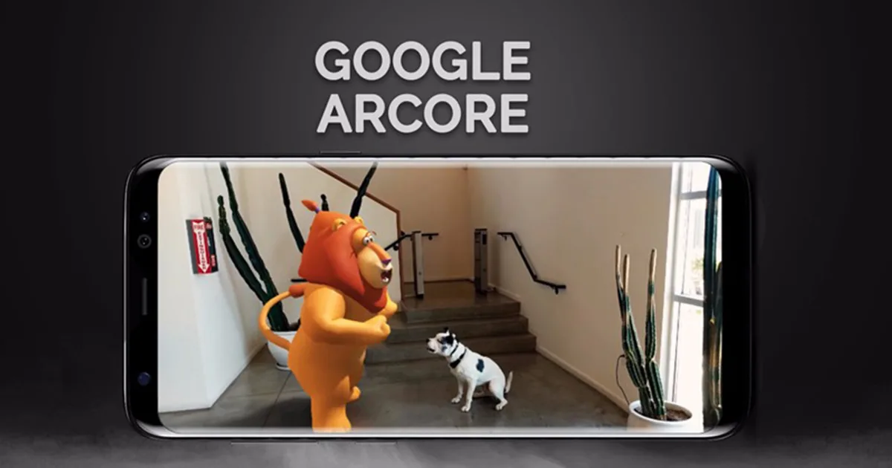
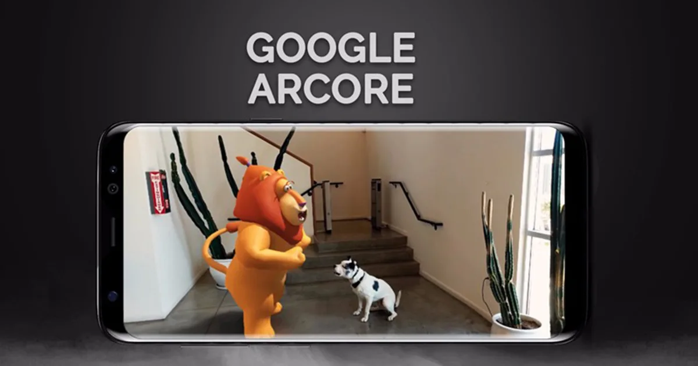

Логотип ARCore

Пример работы в ARCore
_____________________________________________________________________________________________________________
ARCore - это набор для разработки программного обеспечения, разработанный Google, который позволяет создавать приложения дополненной реальности. ARCore использует три ключевые технологии для интеграции виртуального контента с реальным миром, видимым через камеру вашего телефона. Отслеживание движения: оно позволяет смартфону понять своё положение в реальном мире. Понимание окружающей среды: оно позволяет смартфону определять размер и местоположение всех типов поверхностей (вертикальных, горизонтальных и угловых). Оценка освещённости: это позволяет смартфону оценить текущие условия освещения окружающей среды.
Логотип ARCore

Пример работы в ARCore
Главные преимущества ARCore:
Главные недостатки ARCore:
A подробное описание данной программы и как ею пользоваться можно узнать по ссылке, а также в видео ниже:
Как пользоваться программой ARCore